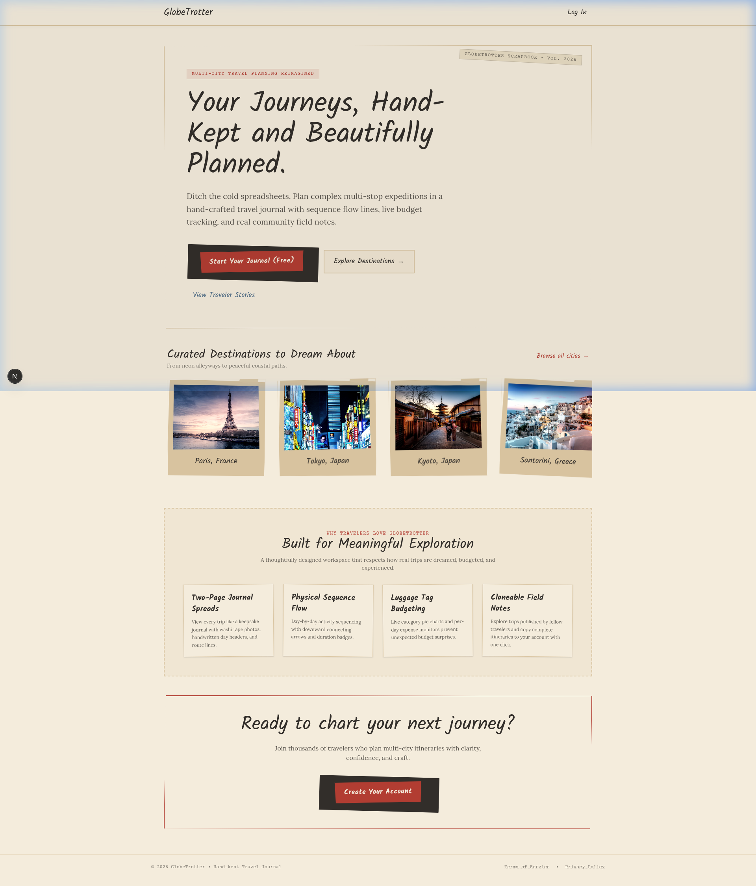
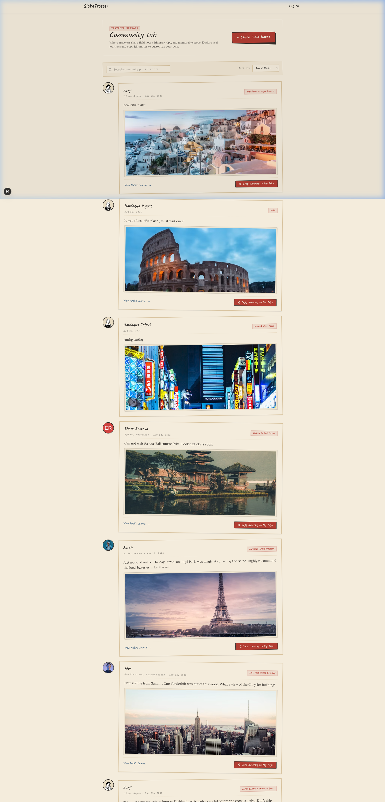
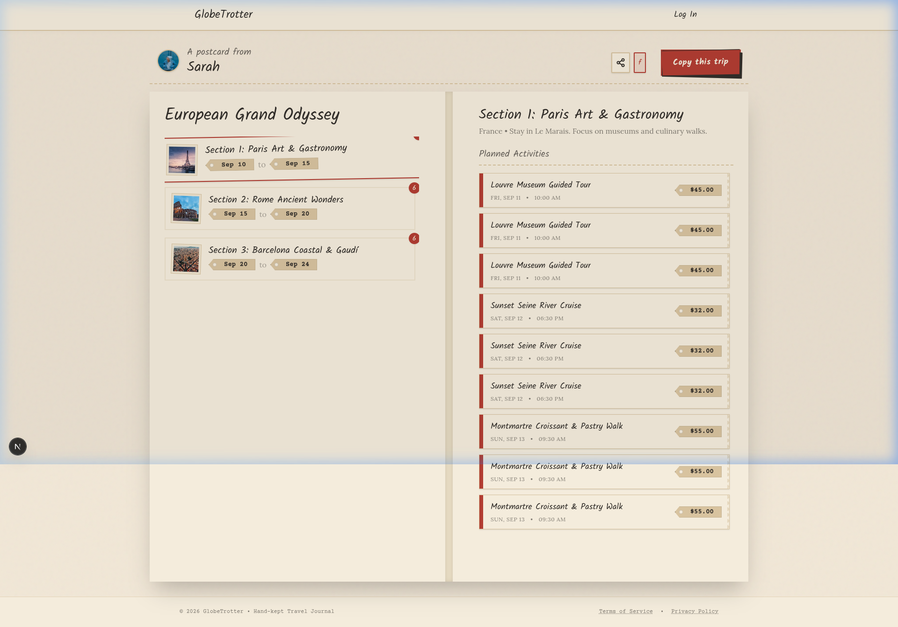
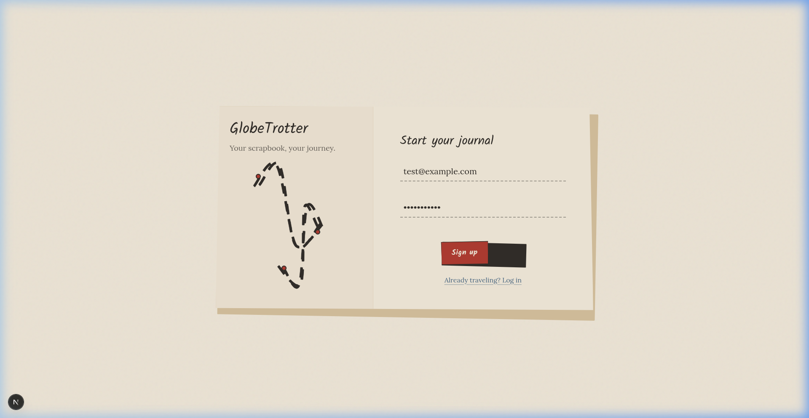

A tactile, scrapbook-inspired multi-city itinerary planner with live budget tracking, currency conversions, day-by-day sequence journal, and shared community journeys.

The main dashboard featuring authentic scrapbook typography (Kalam/Lora), seeded expedition trips, destination discovery, and quick action cards.

Global traveler feed with traveler avatars on the left, rich story field notes on the right, and single-click itinerary cloning.

Chronological two-column itinerary flow with downward sequence flow arrows (↓), activity scheduling, and category luggage tag budgets.

Secure JWT authentication and registration system seamlessly styled with craft aesthetic, instant login, and role-based permissions.
Web Service deployment with Node.js and PostgreSQL connection.
Next.js 16 App Router optimized for global CDN edge deployment.